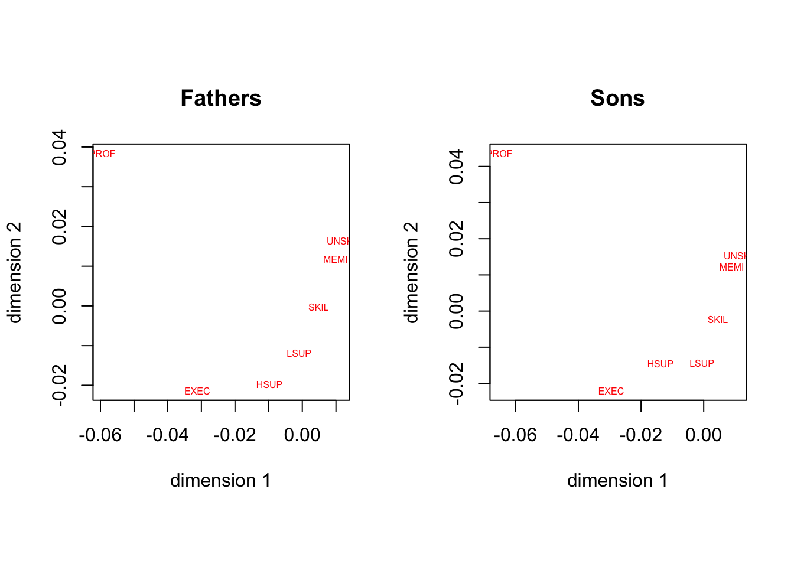
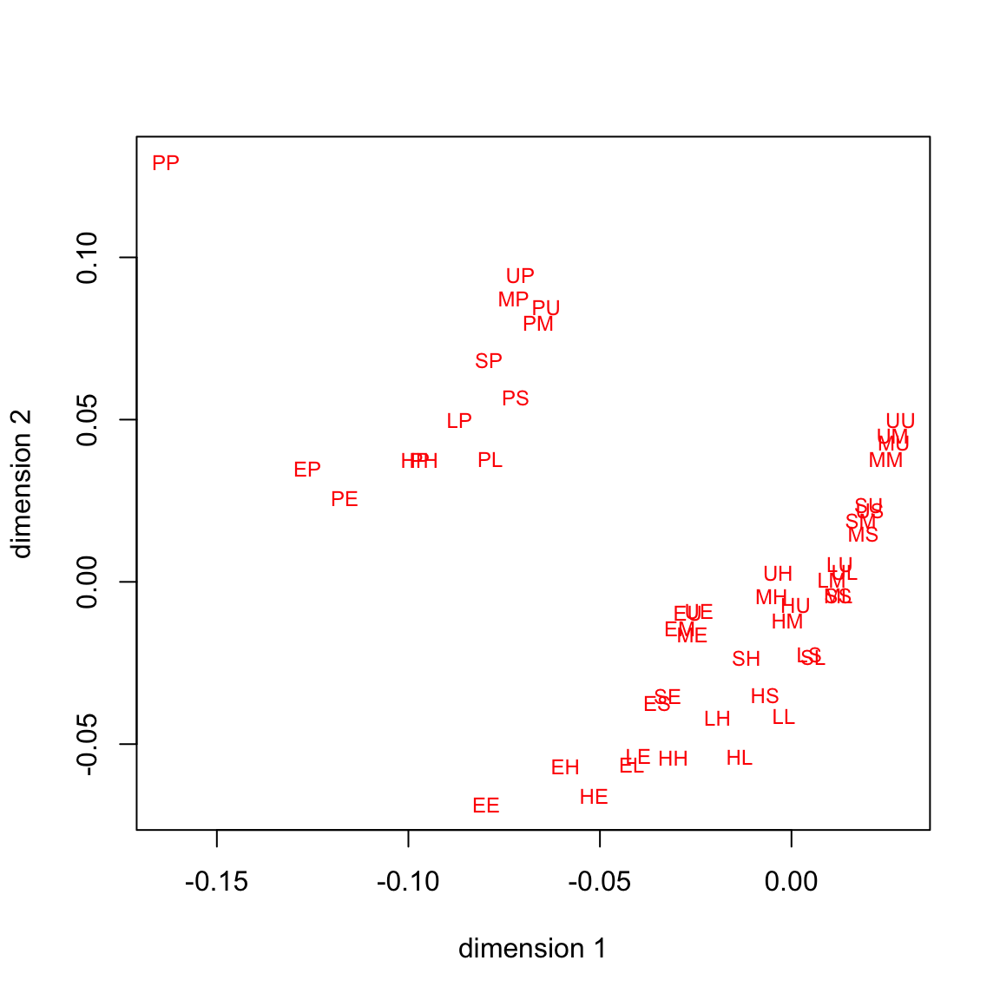
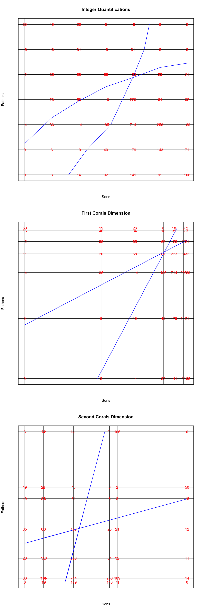
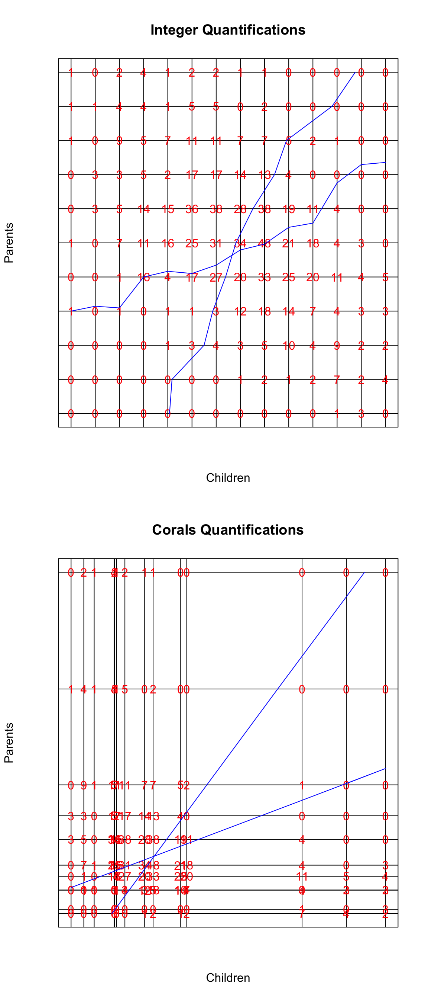
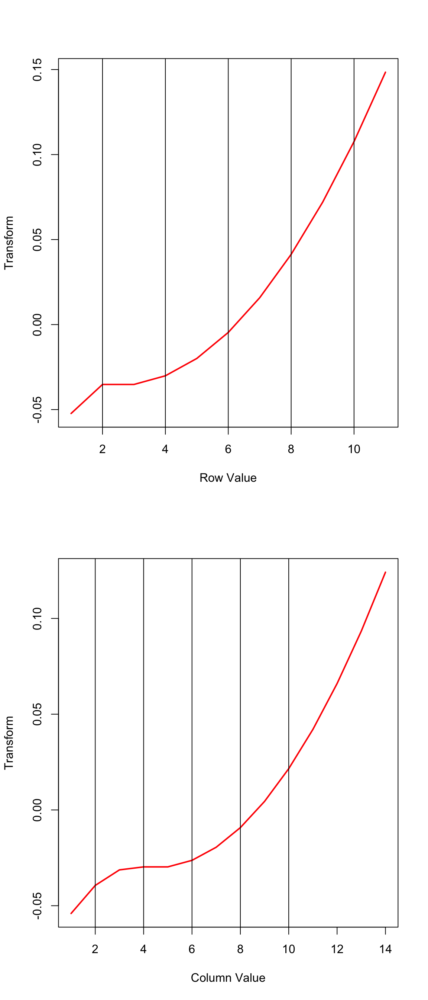

function (data, ftype = TRUE, xknots = NULL, yknots = NULL, xdegree = -1,
ydegree = -1, xordinal = FALSE, yordinal = FALSE, xties = "s",
yties = "s", xmissing = "m", ymissing = "m", xname = "X",
yname = "Y", ndim = 2, itmax = 1000, eps = 1e-06, seed = 123,
verbose = FALSE)
NULL5 Correspondence Analysis and corals()
5.1 Introduction
Ordinary correspondence analysis (CA) is the special case of MCA in which there are only two variables, and both variables have the maximum number of copies. Consequently the homals() wrapper can be used to compute a CA. Because input and output can be organized a bit differently for CA we have written the separate wrapper corals().
Note that corals() is not really intended for routine CA computation. There are many packages in R which do that job much more efficiently. We mention, for example, anacor (De Leeuw and Mair (2009)) and ca (Nenadic and Greenacre (2007)). However, corals() can be used for a number of cases which the usual CA packages do not cover.
In corals(), as in the other packages, the default input is a single non-negative matrix \(F\). Although any non-negative matrix will do, the most common, and the most natural, input is an \(r\times c\) cross table with bivariate frequencies. Suppose the frequencies add up to the total number of observations \(n\). Then gifiEngine(), which is called by corals(), requires input in the form of an \(n\times 2\) matrix. Thus a \(2\times 2\) table with 1000 observations becomes a \(1000\times 2\) matrix. The utility preCorals() makes the conversion, but of course the representation is embarrassingly inefficient, both in terms of memory and in terms of computation. After the computations are done, the utility postCorals() restores transformations and scores to the appropriate row and column dimensions.
Here are the arguments and their defaults.
If dtype is FALSE, then data is a matrix of dimension \(n\times 2\), with \(n\) the number of observations. This takes us back to the input format of homals() with two variables. If xknots and yknots are kept to their default NULL then they are replaced in corals() by the quartiles of the two variables.
The redeeming feature of corals() is that, unlike the other classical CA packages, it can handle numerical variables, it can incorporate higher order splines, it can impose monotonicity restrictions, and it can deal with missing data in one of both of the variables. If there are supplementary variables then it makes more sense to use homals().
5.2 Equations
The usual stationary equations for CA, using the category quantifications \(Y_1\) and \(Y_2\) are \[\begin{align*} C_{12}Y_2&=D_1Y_1\Lambda,\\ C_{21}Y_1&=D_2Y_2\Lambda, \end{align*}\] with normalization \(Y_1'D_1Y_1=I\) and \(Y_2'D_2Y_2=I\).
In the output of gifiEngine() the category quantifications \(\tilde Y_1\) and \(\tilde Y_2\) and the object scores \(X\) satisfy \[\begin{align*}
G_1\tilde Y_1+G_2\tilde Y_2&=2X\tilde\Lambda,\\
D_1^{-1}G_1'X&=\tilde Y_1,\\
D_2^{-1}G_2'X&=\tilde Y_2,
\end{align*}\] with normalization \(X'X=I\). It follows that \[\begin{align*}
C_{12}\tilde Y_2&=D_1\tilde Y_1(2\tilde\Lambda-I),\\
C_{21}\tilde Y_1&=D_2\tilde Y_2(2\tilde\Lambda-I),
\end{align*}\] and thus for the discrimination matrices \(\tilde Y_1'D_1\tilde Y_1=\tilde Y_2'D_2\tilde Y_2=X'P_1X=X'P_2X=\tilde\Lambda\). The two sets of quantities from CA and corals() are related by \(\Lambda=2\tilde\Lambda-I\), \(Y_1=\tilde Y_1\tilde\Lambda^{-\frac12}\) and \(Y_2=\tilde Y_2\tilde\Lambda^{-\frac12}\).
In classical CA there is no direct equivalent of the object scores \(X\). Also we typically do not use the decomposition \(H_jA_j=G_jZ_jA_j=G_jY_j\), with \(H_j'H_j=Z_j'D_jZ_j=I\). From corals() we get the loadings \(H_j'X\), the correlations between the object scores and transformed copies, which for singleton blocks are always equal to the weights \(A_j\). But since the decomposition \(Y_j=Z_jA_j\) is not unique these are of limited use. The correlations between \(X\) and the \(G_j\tilde Y_j\) are more interesting. Since \(X'G_j\tilde Y_j=\tilde\Lambda\), we see these correlations are equal to \(\tilde\Lambda^\frac12\).
5.3 Examples
5.3.1 Glass
We start with a classical CA example that was also used by Gifi (1990) (p 277-280) and by De Leeuw and Mair (2009). Data are from Glass (1954). Occupational status of the fathers is crossed with occupational status of the son, for 3497 British families. The row (father) and column (son) categories are
- PROF professional and high administrative
- EXEC managerial and executive
- HSUP higher supervisory
- LSUP lower supervisory
- SKIL skilled manual and routine nonmanual
- MEMI semi-skilled manual
- UNSK unskilled manual
data (glass, package = "anacor")
names <- c("PROF","EXEC","HSUP","LSUP","SKIL","MEMI","UNSK")
glass <- as.matrix (glass)We apply apply corals() with the default options. Thus we only compute two dimensions and use crisp indicators.
h <- corals(glass)Minimum loss is 0.3017408, attained after 88 iterations. The two discrimination matrices are both equal to
[,1] [,2]
[1,] 0.76 -0.00
[2,] -0.00 0.63which means the corresponding canonical correlations are 0.525629, 0.2674056. The maximum correlation between SES of father and son is 0.525629.
The category quantifications for fathers are
[,1] [,2]
[1,] -0.0594 0.0384
[2,] -0.0312 -0.0214
[3,] -0.0098 -0.0198
[4,] -0.0009 -0.0119
[5,] 0.0049 -0.0003
[6,] 0.0099 0.0118
[7,] 0.0112 0.0163and for sons
[,1] [,2]
[1,] -0.0652 0.0436
[2,] -0.0295 -0.0221
[3,] -0.0138 -0.0146
[4,] -0.0005 -0.0144
[5,] 0.0045 -0.0023
[6,] 0.0090 0.0122
[7,] 0.0106 0.0153
The 3497 objectscores can take only 49 different values, of which only 47 actually occur in the data. They are plotted in figure . Point labels are first letters of the two corresponding SES categories, first letter for the fathers, second letter for the sons.

Next, we look at regression plots, made with the utility regressionPlotter(). One-dimensional category quantifications for rows and columns are used to lCAte row and column categories on the horizontal and vertical axes. Frequencies from the table are used to label the intersections of the corresponding vertical and horizontal lines. We then compute the regression lines, using row and column averages of the category quantifications, for these transformed variables. In the first plot we see what happens if we use equally spaced scores for the categories of both fathers and sons. Regressions are not quite linear. Then we use the first dimension of the CA quantifications, which linearizes the regressions. And in the third plot we use the second dimension, which again linearizes the regressions, but permutes the rows and colums of the table.

5.3.2 Galton
To illustrate some of the additional corals() options we use the classical father-child RFF height data of Galton (1889). It has mid-parent height in the rows and mid-adult-child height in the columns.
data (galton, package = "anacor")
galton <- as.matrix (galton)
galton <- galton[nrow (galton):1, ]
galton below 62.2 62.2 63.2 64.2 65.2 66.2 67.2 68.2 69.2 70.2 71.2 72.2
below 64.5 1 0 2 4 1 2 2 1 1 0 0 0
64.5 1 1 4 4 1 5 5 0 2 0 0 0
65.5 1 0 9 5 7 11 11 7 7 5 2 1
66.5 0 3 3 5 2 17 17 14 13 4 0 0
67.5 0 3 5 14 15 36 38 28 38 19 11 4
68.5 1 0 7 11 16 25 31 34 48 21 18 4
69.5 0 0 1 16 4 17 27 20 33 25 20 11
70.5 1 0 1 0 1 1 3 12 18 14 7 4
71.5 0 0 0 0 1 3 4 3 5 10 4 9
72.5 0 0 0 0 0 0 0 1 2 1 2 7
above 72.5 0 0 0 0 0 0 0 0 0 0 0 1
73.2 above 73.2
below 64.5 0 0
64.5 0 0
65.5 0 0
66.5 0 0
67.5 0 0
68.5 3 0
69.5 4 5
70.5 3 3
71.5 2 2
72.5 2 4
above 72.5 3 0corals(), with default options, in the familiar before and after format, are in figure.

We see some deviations from monotonicity and the ends of the scale, where some columns of the table are interchanged. This is presumably because of the small number of observations in the extreme categories. We repeat the analysis with ordinal transformations of degree 2 (i.e. piecewise quadratics, differentiable at the knots, and monotone at the data points) and equally spaced knots.
galton_knots = c(2, 4, 6, 8, 10)
h <- corals(
galton,
ndim = 1,
xord = TRUE,
yord = TRUE,
xdeg = 2,
ydeg = 2,
xknots = galton_knots,
yknots = galton_knots
)The transformations of the variables are in figure. They show some clear deviations from linearity.

De Leeuw, J., and P. Mair. 2009. “Simple and Canonical Correspondence Analysis Using the R Package Anacor.” Journal of Statistical Software 31 (5): 1–18.
Galton, F. 1889. Natural Inheritance. MacMillan; Co.
Gifi, A. 1990. Nonlinear Multivariate Analysis. New York, N.Y.: Wiley.
Glass, D. V. 1954. Social Mobility in Britain. Free Press.
Nenadic, O., and M. J. Greenacre. 2007. “Correspondence Analysis in R, with two- and three-dimensional graphics: The ca package.” Journal of Statistical Software 20 (3): 1–13.